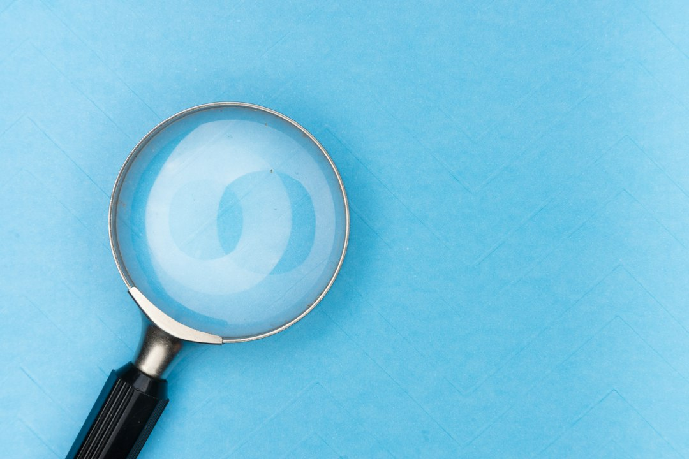
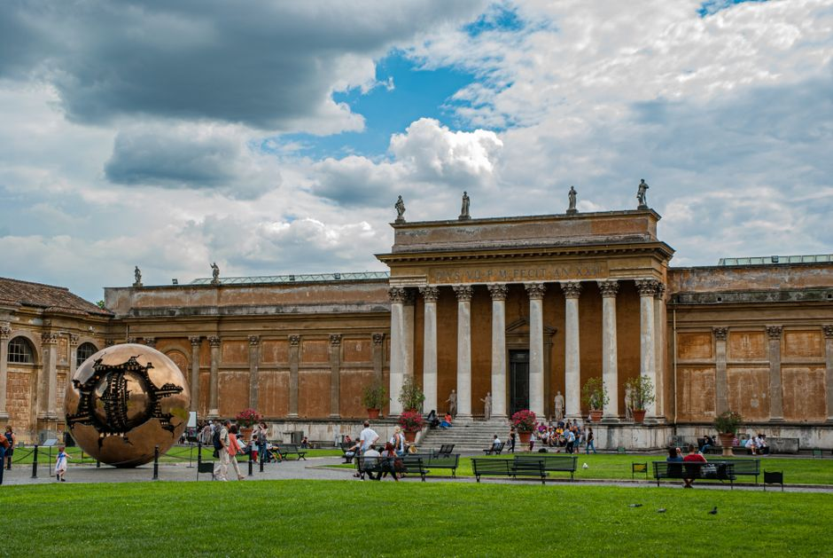

As a PhD student at Michigan State University (MSU), I am working towards a degree in anthropology with a focus in forensic anthropology. Under the advisership of Dr. Joe Hefner, I am exploring population affinity research and other aspects of the biological profile.
Prior to MSU, I spent two years at Texas State University (TXST) earning a MA in anthropology. For my undergraduate degrees, I spent four years earning a Bachelor of Science in Anthropology, a Bachelor of Science in History, and a Minor in Professional Writing in the heart of North Carolina’s Blue Ridge Mountains at Western Carolina University (WCU).

I am a graduate student in the Arts & Cultural Management and Museum Studies master’s program at Michigan State University.
As an undergrad, I triple majored in history, women’s and gender studies, and psychology at MSU, where I’ve also worked as a writing center consultant since 2021. I received my first master’s degree in rhetoric and writing at MSU and worked as a research assistant at the WIDE (Writing, Information, and Digital Experience) Research Lab.